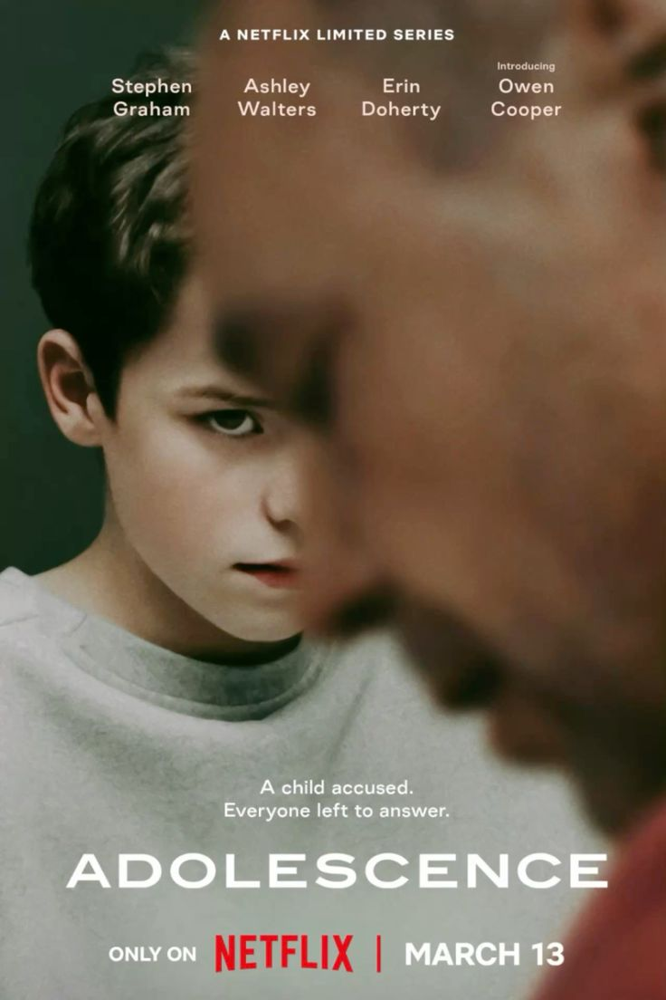

Adolescence
-
Deskripsi Singkat: Serial drama kriminal yang menyoroti kehidupan seorang remaja yang terlibat dalam sebuah kasus pembunuhan, serta dampaknya terhadap keluarga dan komunitasnya.
-
Aktor Pemeran Utama: Stephen Graham, Ashley Walters, Erin Doherty, Owen Cooper, Faye Marsay, Christine Tremarco
-
Pengarang Cerita: Jack Thorne & Stephen Graham
Sutradara: Philip Barantini
-
Rating:
-
Sinopsis: Jamie Miller, remaja berusia 13 tahun, ditangkap karena dituduh membunuh seorang teman sekelasnya. Kejadian ini mengguncang keluarganya—ayah, ibu, kakak, dan kerabat dekat—yang berusaha memahami apa yang sebenarnya terjadi. Penyelidikan polisi dan psikolog mengungkap tekanan psikologis, konflik keluarga, serta faktor-faktor yang membuat Jamie terjerumus dalam tragedi itu. Serial ini mengeksplorasi trauma, moralitas, dan konsekuensi dari tindakan remaja dalam situasi ekstrem.